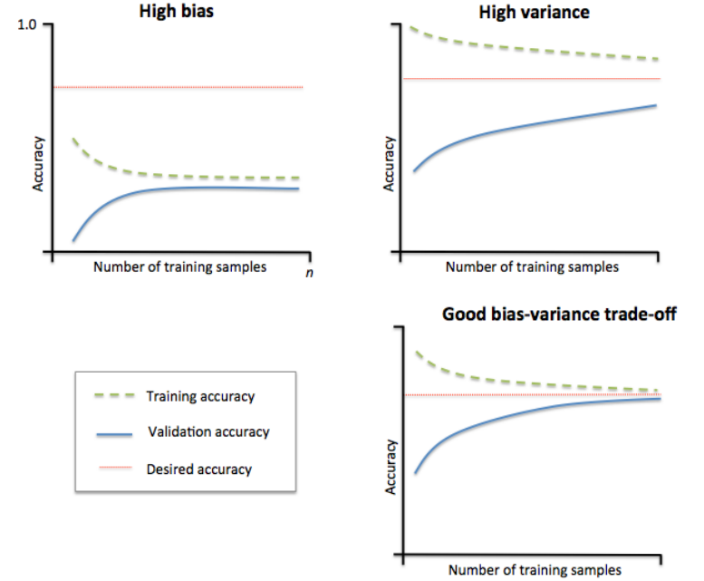
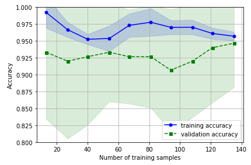

偏差方差分解(The Bias-Variance Decomposition)是用来衡量模型复杂度的数学工具，也称为(the bias variance trade-off)，是解释学习算法泛化能力的一种工具。
note: 为了说明方便，我们只讨论回归问题，损失函数使用平方和损失函数
泛化误差
假设我们现在有数据集$D=\{(x_1,t_1),(x_2,t_2),\dots,(x_N,t_N)\}$，每个样本的特征用$x$表示，label用$t$表示。
该数据集是从总体$\Omega$ 中 独立同分布 的抽样得到的，即$D \in \Omega$。
$\Omega$中样本服从的分布为$p(x,t)$，存在一个未知函数$h(x)$能够精确计算$x$到$t$的映射。
在抽样过程中，(观测值)t是存在误差的，所以不能保证$t_i=h(x_i)$。
由于是独立同分布抽样，所以$D$也服从分布$p(x, t)$ 。
我们通过某种方法从数据集$D$中学习到了一个模型$y(x)$ ，即，不同的数据集$D$对应不同的模型超参。
在训练集$D$上的平均误差称为 经验误差 ：
$$
L=\int\int{L(t,y(x;D))p(x,t) dx dt}
$$
对于回归问题本文使用平方和损失函数（squared loss）则$L$为：
$$
L=\int\int{ [y(x;D)-t]^2p(x,t) dx dt}
$$
模型在总体$\Omega$上的平均误差称为 泛化误差。因为我们是无法观察到总体$\Omega$的，所以泛化误差是无法直接计算的。
但是可以观察到$D$，因为$D$是$\Omega$的独立同分布采样获得的，所以经验误差的期望等于泛化误差。
$$
\begin {aligned}
E_D[L] =& \int_D \int\int{ [y(x;D)-t]^2p(x,t) dx dt dD} \\
\end {aligned} \tag 1
$$
note:
- 泛化误差是经验误差$L$都$D$积分得到的(take the expectation of this expression with respect to $D$)。
- 对于不同的数据集$D$，模型的超参是不同的。可以通过贝叶斯理论理解。贝叶斯方法认为超参是一个后验分布，即超参不是一个固定值。频率学派认为超参是一个点估计，对于不同的数据集将得到一个固定估计值，所以超参是不同数据集点估计的期望。
- 公式1 的表述我没有在看到的资料中找到，如果个人表达有误，以后修正。
- 下面的公式推导都是以公式1 为基础。
变量定义
本文中使用的变量定义如下：
| 符号 | 涵义 |
|---|---|
| $x$ | 样本特征值 |
| $D$ | 数据集 |
| $t$ | $x$ 在数据集$D$中的标记 |
| $h(x)$ | $x$ 的真实标记 |
| $y(x;D)$ | 在数据集 $D$ 学到的模型对$D$中样本$x$的预测标记 |
| $L$ | 经验误差 |
| $E_D[L]$ | 泛化误差，$L$在$D$上的期望 |
| $E_D[y(x;D)]$ | 可以理解为有多个数据集$D$，将$x$的预测值在所有的$D$上求期望 |
推导过程
偏差-方差分解通过将模型的泛化误差( expected loss)分解成 方差(variance) 偏差(bias) 和 噪声(noise)三部分，来分析一个模型的泛化能力。
当样本量足够大时 $h(x)=E_t[t|x] = \int tp(t|x)dt$。
使用有限样本集$D$ 训练出来的最优模型 $y(x;D) = E_t[t|x]=\int tp(t|x)$。(Pattern Recognition and Machine Learning公式 1.87-1.89推导得到)
为了方便下面的公式推导，先列出如下假设：
- 样本的噪声的期望为0（note 区别与下面”样本噪声”），即在样本集$D$上 :
$$
E [t-h(x)] = \int\int [t-h(x)] p(t,x) dxdt = 0
$$
由于泛化误差$E_D[L]$是经验误差的期望$E_D[L]=\int_D L dD$，先将将$L$分解如下：
$$
\begin {aligned}
L &=\int\int{ [y(x;D)-t]^2p(x,t) dx dt} \\
&=\int\int{ [y(x;D)-h(x)+h(x)-t]^2p(x,t) dx dt} \\
&=\int\int{ \{[y(x;D)-h(x)]+[h(x)-t]\}^2 p(x,t) dx dt}\\
&=\int\int{ \{[y(x;D)-h(x)]^2 + 2[y(x;D)-h(x)][h(x)-t] + [h(x)-t]^2\} p(x,t) dx dt} \\
\end {aligned}
$$
前两项对t积分，根据噪声为0的假设，消掉交叉项
$$
\begin {aligned}
L &=\int{ [y(x;D)-h(x)]^2p(x)dx} +\int\int{ [h(x)-t]^2 p(x,t) dx dt}
\end {aligned}
$$
定义第二项为样本噪声：反应样本抽样值(即观测值)与真实值之间的差异。
$$
noise = E\{ [t-h(x)]^2\} = \int\int [t-h(x)]^2p(t,x) dxdt \tag 2
$$
$$
\begin {aligned}
E_D[L] &=\int_D \int{ [y(x;D)-h(x)]^2p(x)dxdD} + \int_D noise dD \\
&=\int \int_D{ [y(x;D)-h(x)]^2p(x)dDdx} + noise \\
\end {aligned}
$$
继续分解第一项，在被积分项中添加$E_D[y(x;D)]$：
$$
\begin {aligned}
\int \int_D{ [y(x;D)-h(x)]^2p(x)dDdx} =& \int\int_D{ \{y(x;D)-E_D[y(x;D)]+E_D[y(x;D)]-h(x)\}^2p(x)dDdx} \\
=& \int\int_D\{y(x;D)-E_D[y(x;D)]\}^2p(x)dDdx \\
&+ \int\int_D2\{y(x;D)-E_D[y(x;D)]\}\{E_D[y(x;D)]-h(x)\}p(x)dDdx\\
&+ \int\int_D\{E_D[y(x;D)]-h(x)\}^2 p(x)dDdx
\end {aligned}
$$
三项分别表示如下:
第一项定义为方差
$$
\begin {aligned}
variance=& \int\int_D\{y(x;D)-E_D[y(x;D)]\}^2p(x)dDdx \\
=&\int E_D\{y(x;D)-E_D[y(x;D)]\}^2p(x)dx
\end {aligned} \tag 3
$$
第二项(交叉项)值为0
$$
\begin {aligned}
& \int\int_D2\{y(x;D)-E_D[y(x;D)]\}\{E_D[y(x;D)]-h(x)\}p(x)dDdx\\
&= \int2\{E_D[y(x;D)]-h(x)\}p(x) \int_D\{y(x;D)-E_D[y(x;D)]\} dD dx \\
&= \int2\{E_D[y(x;D)]-h(x)\}p(x) \{\int_Dy(x;D)dD-E_D[y(x;D)]\} dx \\
&= \int2\{E_D[y(x;D)]-h(x)\}p(x) \{E_D[y(x;D)]-E_D[y(x;D)]\} dx \\
&=0
\end {aligned}
$$
第三项定义为偏差
$$
\begin {aligned}
bias^2 =& \int\int_D\{E_D[y(x;D)]-h(x)\}^2 p(x)dDdx \\
=& \int\{E_D[y(x;D)]-h(x)\}^2 p(x)dx \\
\end {aligned} \tag 4
$$
综上，泛化误差可以分解为如下形式：
$$
\begin {aligned}
E_D[L] =& \int E_D\{y(x;D)-E_D[y(x;D)]\}^2p(x)dx \\
&+ \int\{E_D[y(x;D)]-h(x)\}^2 p(x)dx \\
&+ \int\int [t-h(x)]^2p(t,x) dxdt \\
=& variance + bias^2 + noise
\end {aligned}
$$
分析
$$
\begin {aligned}
variance =&\int E_D\{y(x;D)-E_D[y(x;D)]\}^2p(x)dx \\
bias^2=& \int\{E_D[y(x;D)]-h(x)\}^2 p(x)dx \\
noise =&\int\int [t-h(x)]^2p(t,x) dxdt
\end {aligned}
$$
对以上三项分析如下：
$bias^2$：度量了学习算法预测值的期望与真实值之间的偏离程度，即学习算法本身的拟合能力；
$variance$：度量了训练数据集的变化对对学习算法性能的影响。
$noise$： 只和抽样值和数据真实值有关，是样本数据所固有的噪声造成的。是任何学习算法能够达到的泛化误差的最小值。
偏差和方差是一对矛盾体，实际应用中是需要从偏差和方差之间找到一个平衡点使得模型的总的泛化误差最小，即，trade-off between bias and variance。在很多时候表现为超参数的取值，比如回归问题中的正则化系数。当正则化系数过小的时候方差较大(样本选取对模型影响较大)，偏差较小；当正则化系数过大时，方差较小，偏差较大。
存在不足
偏差方差分解是从频率学派的角度分析模型复杂度的工具，但是其在实际应用中的价值有限。
使用该方法时首先需要获得多个数据集D，对这些数据集求相应统计量的平均值。
如果我们真的有多个数据集D，把这些数据集合并成为一个大的数据集来作为训练集会得到更好的模型。
下面介绍一种验证模型偏差方差的工具。
Learning Curves
增加训练数据量是解决模型过拟合的一个有效手段，但是通常情况下获取额外的训练数据是比较困难的。通过绘制随着训练数据量的增长模型在制训练集和验证集上的accuracy的图可以判断一个模型

如上如所示：
- 右下角：在数据量增长到一定程度以后，模型在训练集和验证集上的准确度都趋近与desired accuracy。
- 左上角：模型在训练集和验证集上的accuracy都较低，表明模型具有较大的偏差，模型在训练集上欠拟合。
- 右上角：训练集和验证集accuracy曲线具有较大的间隔，表明模型具有较大的方差，模型在训练集上过拟合。
解决过拟合和欠拟合
我认为解决过拟合和欠拟合问题可以从两个方面考虑：模型、数据
- 过拟合
- 模型：减小模型复杂度（换用更简单的模型，增加正则化）
- 数据：增加数据量
- 欠拟合
- 模型：增加模型复杂度（换用更复杂的模型，减小正则化）
- 数据：增加新的特征
实例
1 | import numpy as np |

参考资料
Pattern Recognition and Machine Learning
机器学习_周志华